Universitas Hasanuddin
S1 Sistem Informasi
ABOUT ME
Saya Achmad Tifli, mahasiswa Sistem Informasi Universitas Hasanuddin yang memiliki ketertarikan pada teknologi, data, software, dan desain.
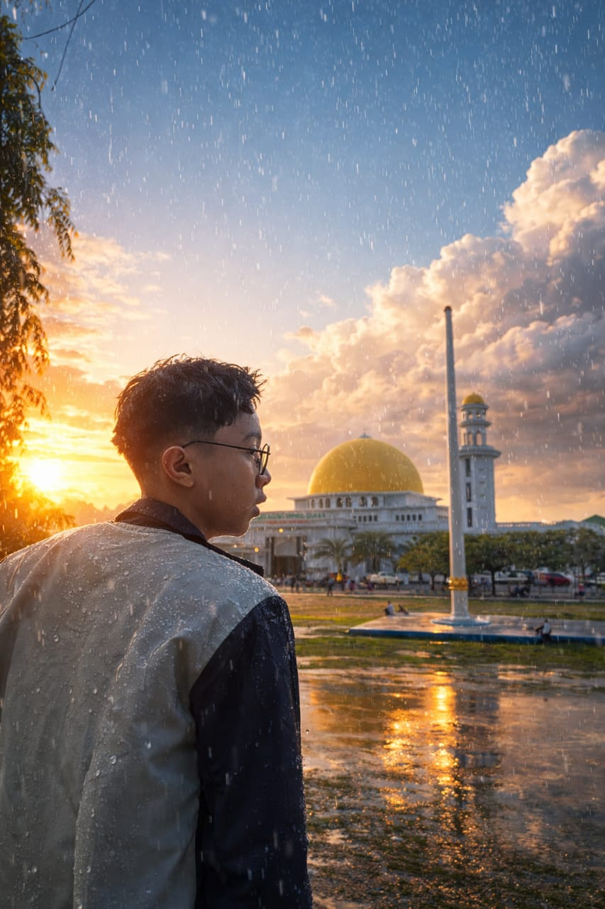
PROFILE
Saya sedang menempuh pendidikan di Program Studi Sistem Informasi Universitas Hasanuddin. Saya menikmati proses membuat project, mempelajari teknologi baru, dan mengubah ide menjadi sesuatu yang bisa digunakan.
Bidang yang ingin saya kembangkan lebih jauh adalah Data Science, Data Analysis, Software Engineering, serta teknologi seperti AI, Cloud, dan IoT.
SKILLS
NON-TECHNICAL SKILLS
ACHIEVEMENTS
Meraih Harapan 1 dalam KSM Beregu Sains Terpadu tingkat kabupaten/kota.
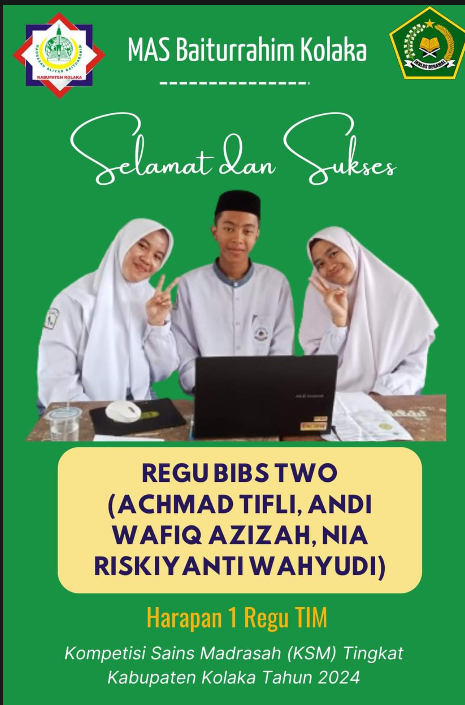
Meraih juara 1 pada Liga Santri 2023 cabang olahraga sepak takraw.
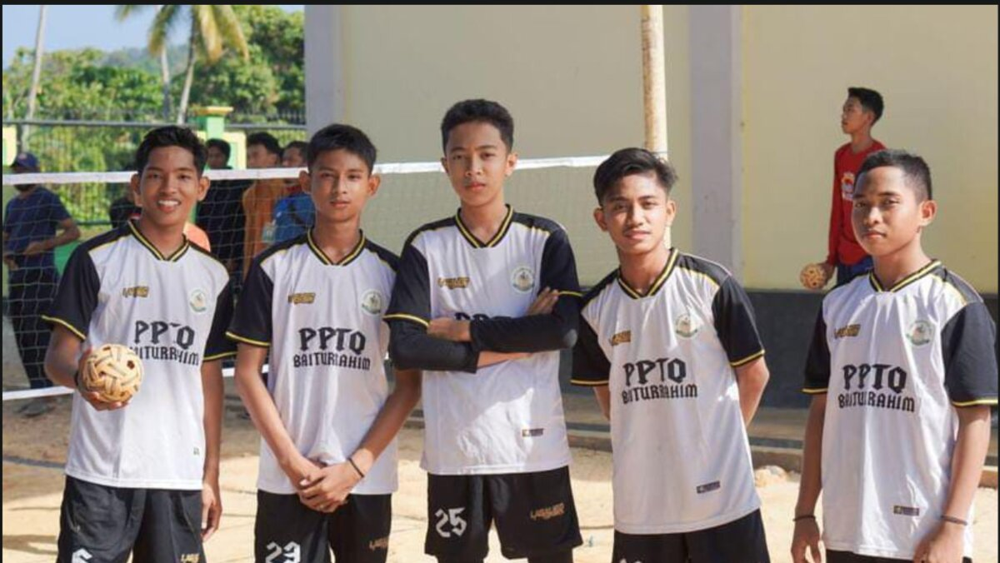
Berpartisipasi sebagai peserta dalam MHQ tingkat nasional yang dilaksanakan oleh STIBA Ar-Rayyah.
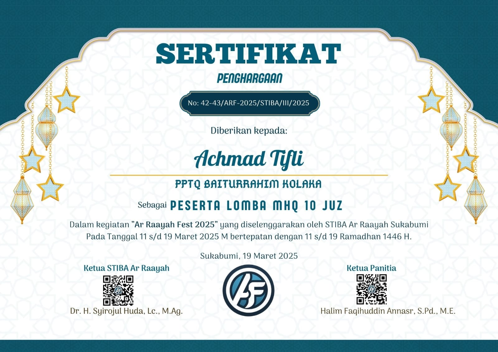
Berpartisipasi dalam kompetisi UI/UX tingkat nasional The Ace UNDIP.
Berpartisipasi dalam IFest UNTAD 2026.
Memiliki pengalaman dan pencapaian dalam hafalan Al-Qur'an.
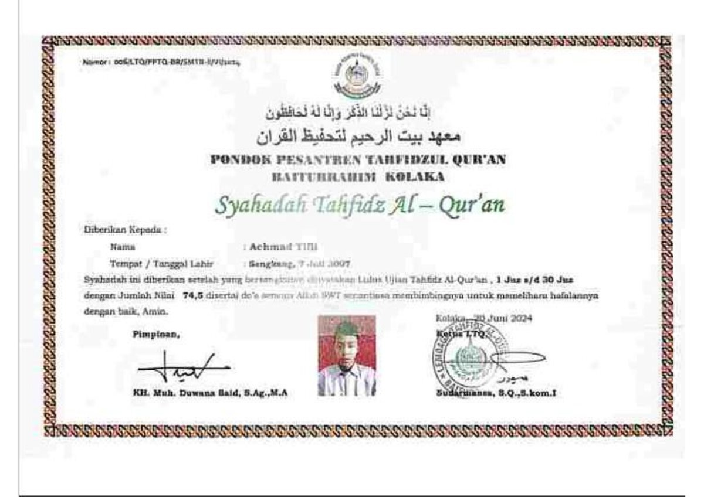
Diterima sebagai mahasiswa Universitas Hasanuddin.
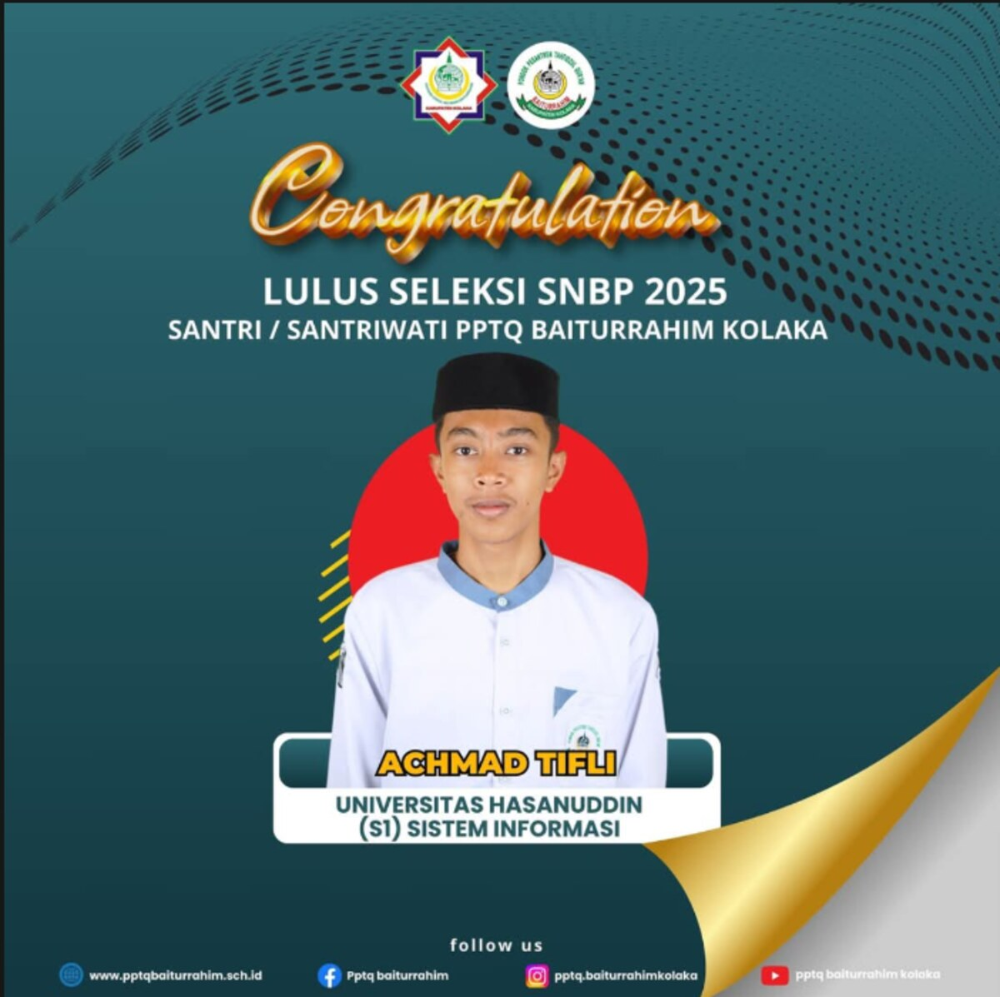
Menjadi finalis dalam kompetisi MTQM Universitas Hasanuddin.
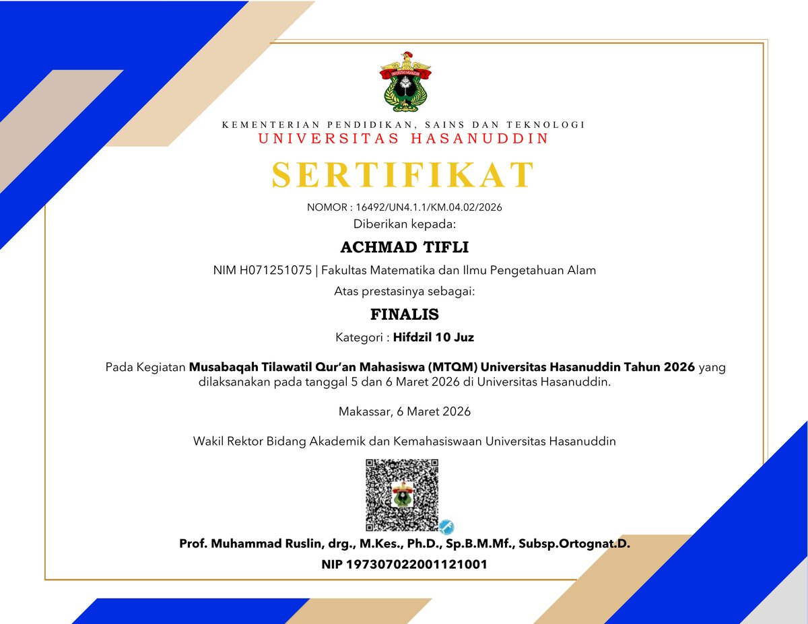
Menjadi salah satu peserta terbaik dalam kegiatan SAINS Unhas.
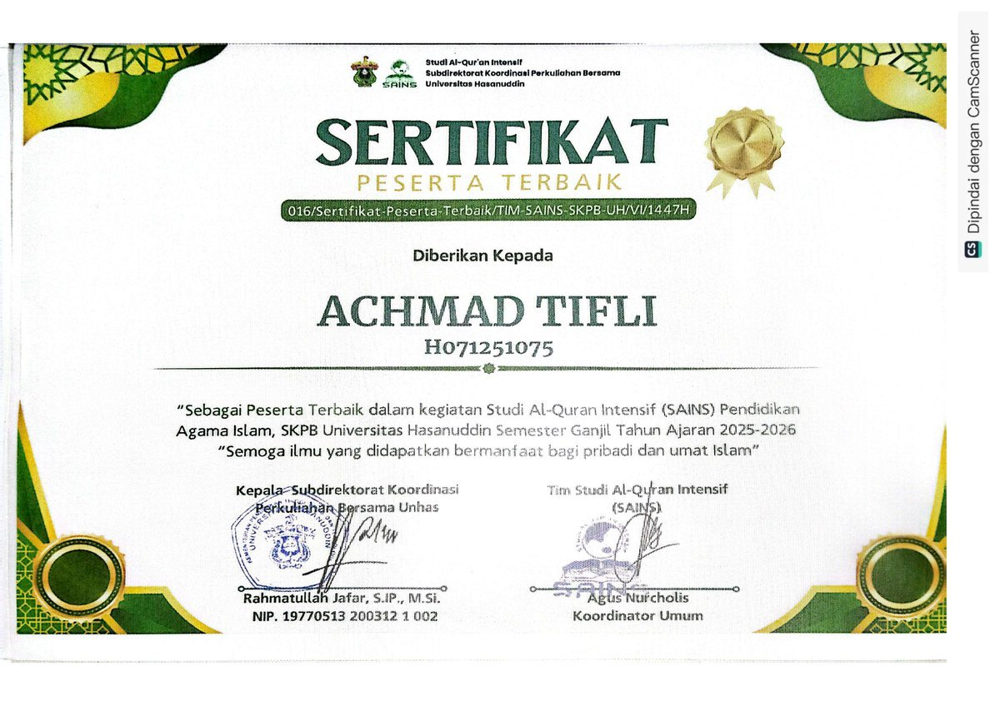
Meraih pencapaian sebagai lulusan akademik terbaik di Madrasah Aliyah.
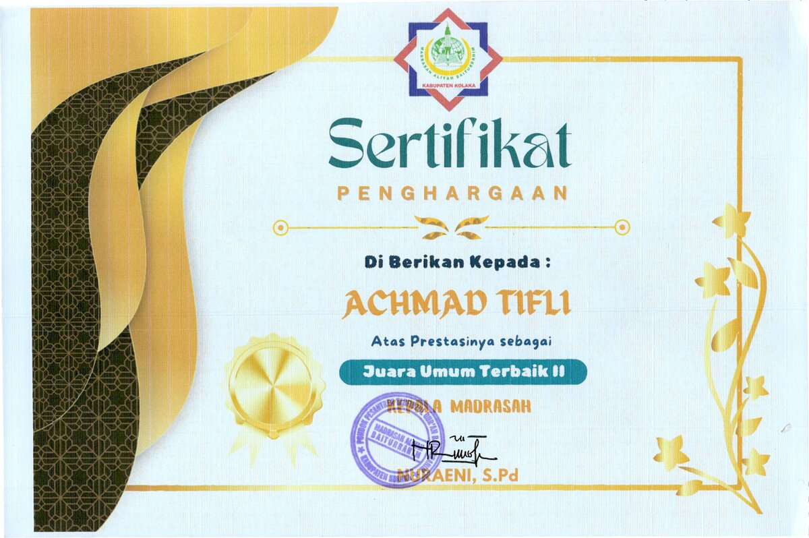
ORGANIZATION EXPERIENCE
Menjabat sebagai Ketua OSIS selama periode 2024–2025 dan berpengalaman dalam koordinasi kegiatan serta kepemimpinan siswa.
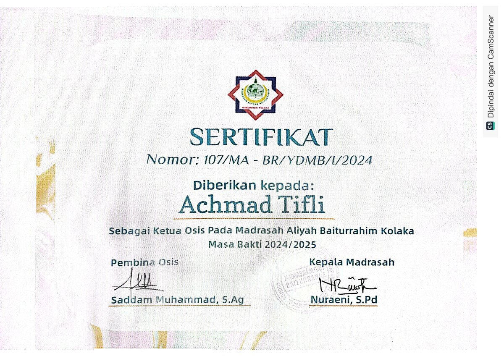
Menjadi pengurus UKM LDK MPM Unhas untuk periode 2026–2027.
Serta telah menjalani berbagi kepanitian seperti menjadi Koordinator Publikasi dan Dokumentasi pada Gema Ramadhan Kampus dan Panitia Asistensi Umum SAINS UNHAS, Ramah Tamah SAINS UNHAS, PKKMB UNHAS 2026 dan Kepanitian Lainnya yang di bawah Naungan LDK MPM dan UNHAS.
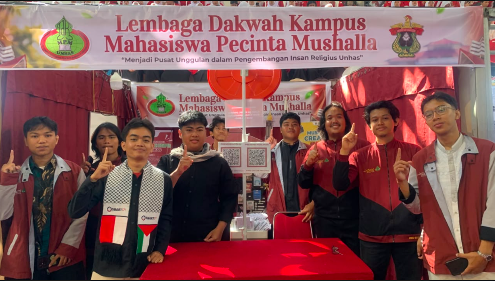
Berperan sebagai asisten/mentor dalam tim SAINS Unhas.
Mengajarkan Ilmu Tajwid yang merupakan bagian dari mata kuliah Pendidikan Agama Islam.
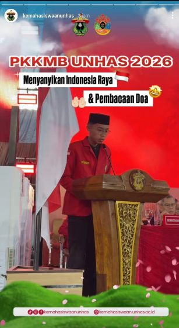
EDUCATION
S1 Sistem Informasi
Pendidikan Menengah Atas
Jurusan IPA.
PROJECTS
Project UI/UX dan visual tracking yang menjadi salah satu project pengembangan saya.
Sistem pencatatan bagi rumah makan yang dikembangkan menggunakan JavaFX dan SQL.
Sistem manajemen penjadwalan yang dirancang untuk membantu mahasiswa mengatur tugas dan aktivitas berbasis python.
Eksperimen menggunakan Python, OpenCV, dan MediaPipe untuk interaksi berbasis gesture.
Project computer vision untuk mendeteksi kondisi mengantuk dan memberikan peringatan.